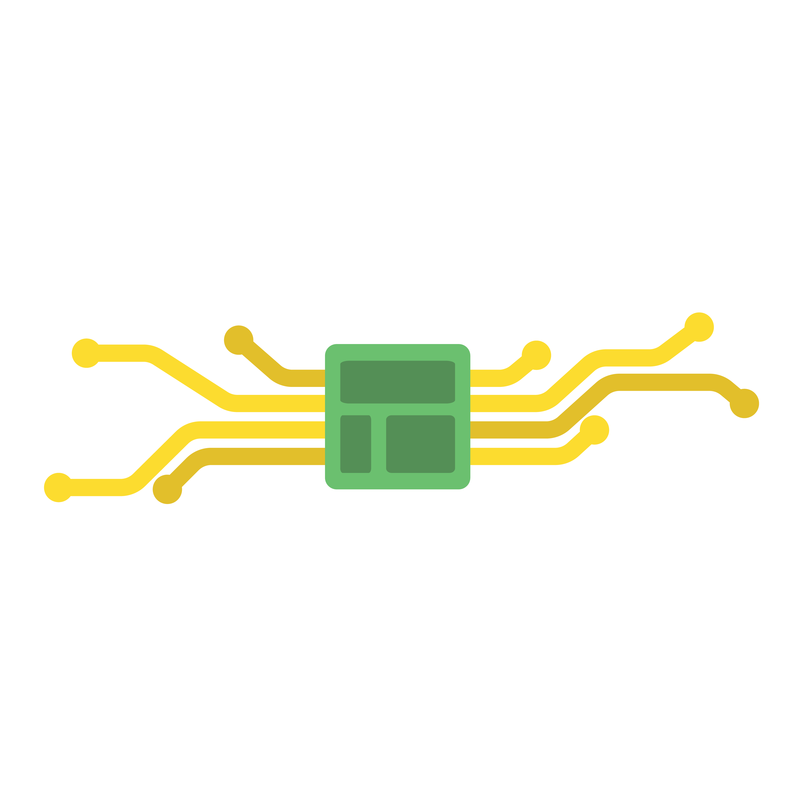
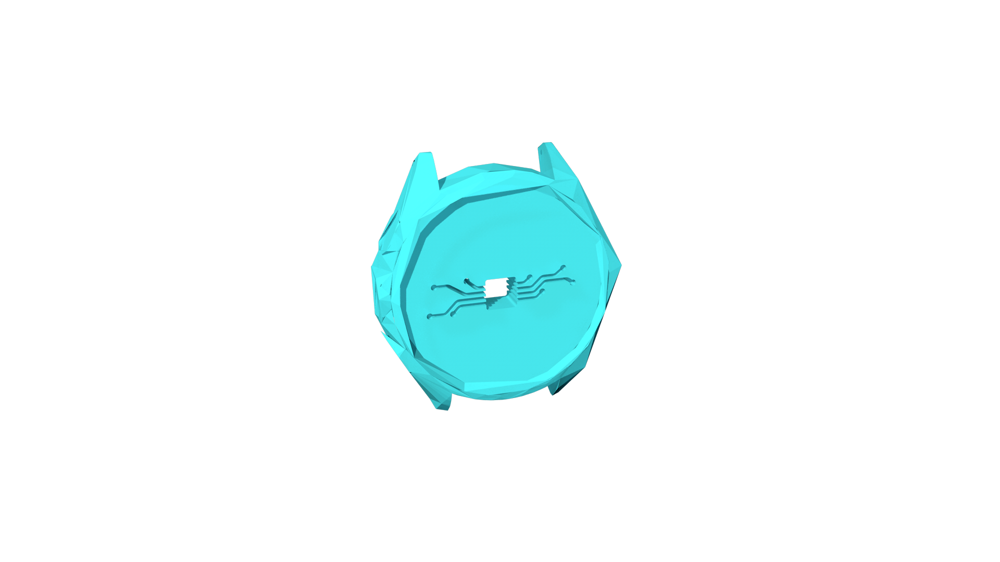
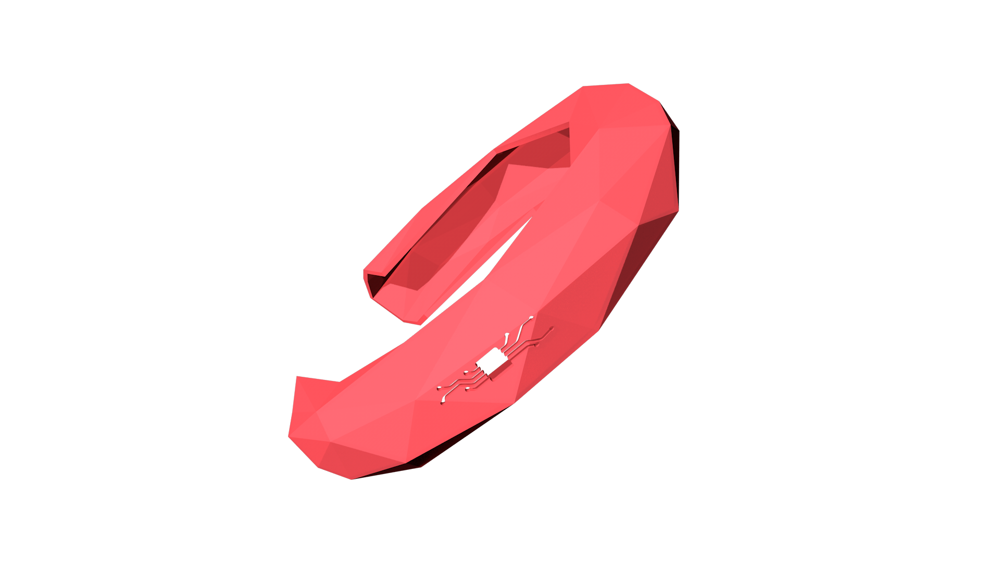
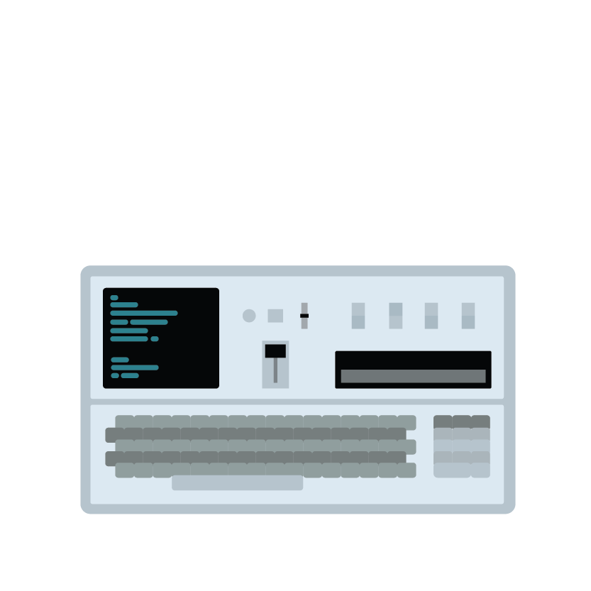
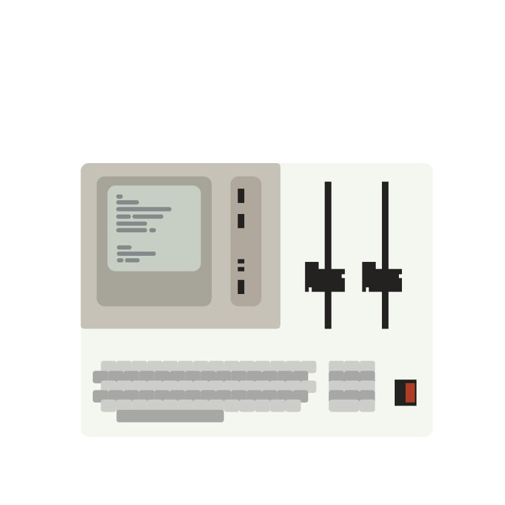
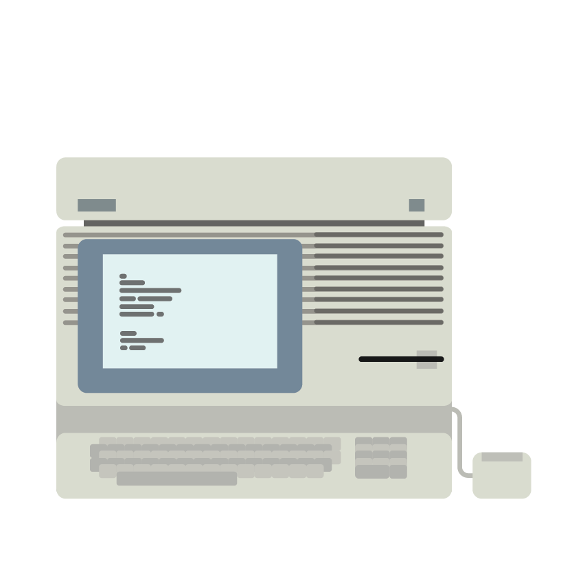
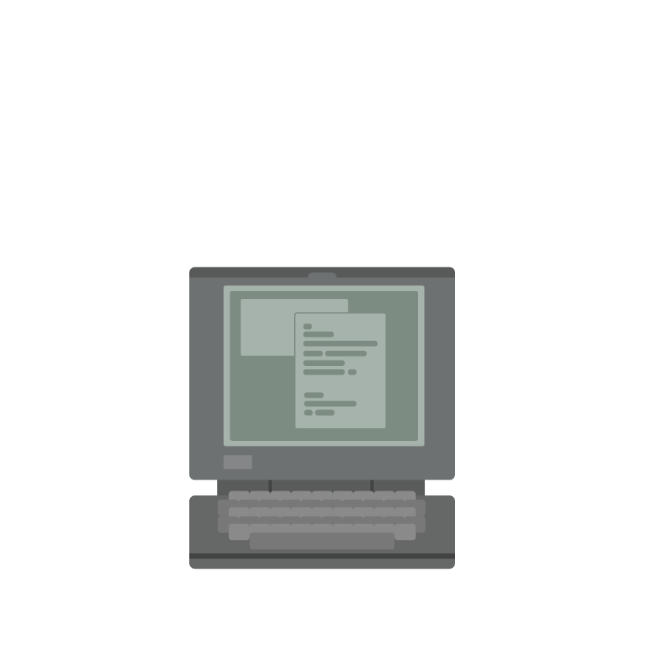
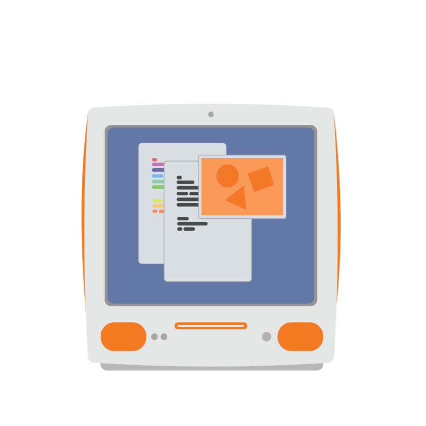
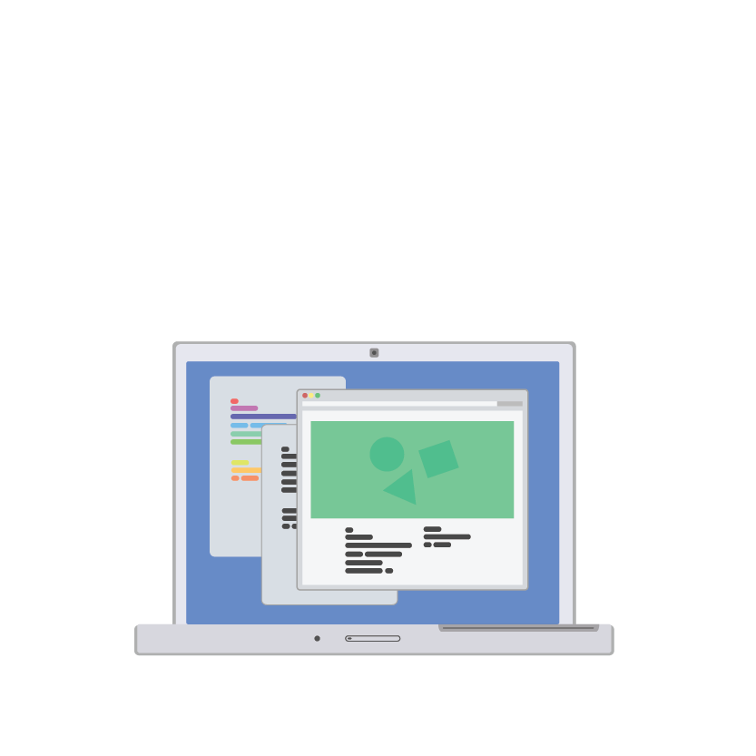
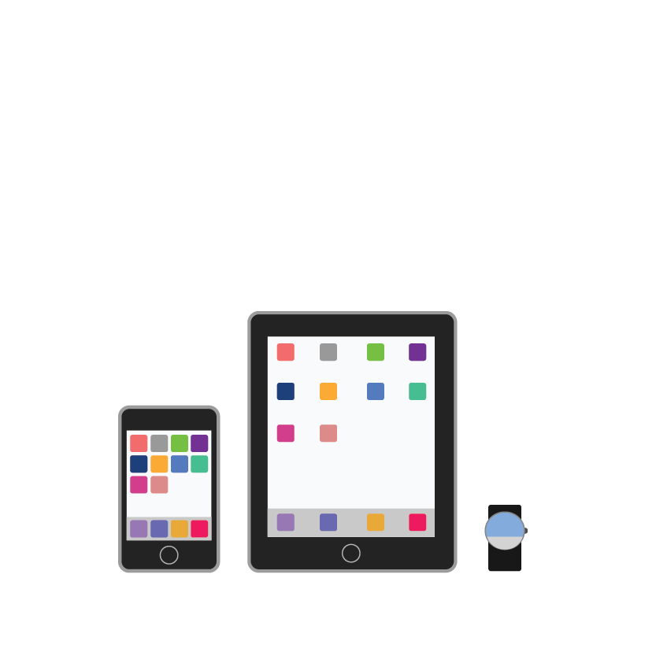

The Future of Technology
-

-
Tech
EverywhereWhat motivated me to pursue this project is changing how people interact with their technology. Too much time is spent on trying to work the technology instead of letting the technology work for you.
The problem with technology nowadays is that we pay too much attention to it. It’s upsetting how devoted people are to their electronics like they’re in a monogamous relationship with it.
I want people to stop constantly looking at their technology. Because of this, technology is often in the way of productivity and efficiency.
Modern technology has the potential to know when it is needed and when to make itself be available for use. If technology can do that, it should be able to help us with everyday things in ways that it has never been imagined to do.
-

Watch
Imbued with technology, the watch is always a step ahead. It’s an evoker, the watch is a part of your everyday life. It is used to make everything simpler. It talks to other methods of technology. It knows when you need to wake up. It knows when you need to do things and alerts you.
Its a familiar object used in many different ways. It’s meant to be simple yet elegant with an interesting cut. The style is low-poly and works with the minimalist trend in design.
It doesn’t need batteries thus it will never need to be charged. Instead, it is powered through contact with your skin. Upon making contact, it automatically syncs up with other forms of technology.
It will be made up of metals and colorful polycarbonates. It harkens to the familiar, classical form of the watch yet has the capabilities of modern technology. Also worn on the wrist, it is equal in function as the other two.
Technology has evolved to a point where interaction takes place in more than just a screen. Rather, it interacts with us.
-
Pendant
Imbued with technology, the pendant is always a step ahead. It’s an evoker, the pendant is a part of your everyday life. It is used to make everything simpler. It talks to other methods of technology. It knows when you need to wake up. It knows when you need to do things and alerts you.
Its a familiar object used in many different ways. It’s meant to be simple yet elegant with an interesting cut. The style is low-poly and works with the minimalist trend in design.
It doesn’t need batteries thus it will never need to be charged. Instead, it is powered through contact with your skin. Upon making contact, it automatically syncs up with other forms of technology.
It will be made up of metals and colorful polycarbonates. It harkens to the familiar, classical form of the watch yet has the capabilities of modern technology. Also worn on the wrist, it is equal in function as the other two.
Technology has evolved to a point where interaction takes place in more than just a screen. Rather, it interacts with us.
-

Bangle
Imbued with technology, the bangle is always a step ahead. It’s an evoker, the bangle is a part of your everyday life. It is used to make everything simpler. It talks to other methods of technology. It knows when you need to wake up. It knows when you need to do things and alerts you.
Its a familiar object used in many different ways. It’s meant to be simple yet elegant with an interesting cut. The style is low-poly and works with the minimalist trend in design.
It’s unique.
It doesn’t need batteries thus it will never need to be charged. Instead, it is powered through contact with your skin. Upon making contact, it automatically syncs up with other forms of technology.
It will be made up of metals and colorful polycarbonates. It harkens to the familiar, classical form of the watch yet has the capabilities of modern technology. Also worn on the wrist, it is equal in function as the other two.
Technology has evolved to a point where interaction takes place in more than just a screen. Rather, it interacts with us. 
-

-
1975
The IBM 5100 is based on a 16-bit processor module called PALM (Put All Logic in Microcode). The IBM 5100 Maintenance Information Manual also referred to the PALM module as the controller. The PALM could directly address 64 KB of memory. Some configurations of the IBM 5100 had Executable ROS (ROM) and RAM memory totalling more than 64 KB, so a simple bank switching scheme was used.
The IBM 5100 is one of the first “portable” computers. It was the evolution of a prototype called the SCAMP (Special Computer APL Machine Portable) that was developed at the IBM Palo Alto Scientific Center.
This was a milestone in technology, being portable and addressing two kinds of languages (APL, BASIC) and being based off a problem solver library it was able to compute things with more then a 1000 time interaction which was a marked 20% faster then competing tech.
-

-
1980
It featured two built-in 8-inch 1.2 MB floppy disk drives, 9-inch monochrome monitor, BASIC Programming Language, 32K RAM and optional IBM 5114 stand- alone diskette unit with two additional 8-inch 1.2 MB floppy disk drives.
Aside from larger screen size and performance benefits over its predecessor, the IBM 5120 design incorporated several usability advantages such as a reduced ‘footprint’, ease of handling/lifting based on bottom form treatment.
Due to these enhancements in usability the IBM 5120 was recognized with two major industrial design awards and described with terms such as “clean, well thought out”; “subtle detailing shows great care in execution”; and “looks like quality”.
-

-
1985
The Lisa is a personal computer designed by Apple Computer, Inc. during the early 1980s. It was the first personal computer to offer a graphical user interface in an inexpensive machine aimed at individual business users.
The Lisa was a more advanced system than the Macintosh of this time in many respects, such as its inclusion of protected memory, preemptive multitasking, a generally more sophisticated hard disk based operating system, a built-in screensaver, an advanced calculator with a paper tape and RPN, support for up to 2 megabytes (MB) of RAM, expansion slots, a numeric keypad, data corruption protection schemes such as block sparing, non-physical file names (with the ability to have multiple documents with the same name), and a larger higher-resolution display.
The Lisa was a major step in creating the macintoshs of the 80’s, Due to it’s GUI it was a milestone in computing that is still apart of today’s tech.
-

-
1990
These machines caused a stir in the industry with their compact dark grey cases, use of a trackball, and the clever positioning of the keyboard which left room for palmrests on either side of the pointing device. Portable PC computers at the time tended to have the keyboard forward towards the user, with empty space behind it, so this was a surprising innovation and set the standard layout all future notebook computers would follow.
One of the 1st truly desirable compact computer of the 90’s the Powerbook was a major development in design for PC’s and was seen through its sales as its first few years on the market it captured 40% of the total laptop sales in the United States.
-

-
1995
One of the first mass market color personal computers, the Color Classic had an integrated 10” Sony Trinitron color display with a 512×384 pixel resolution something it shared with many non-color displays had at the time.
The color classic was considered to be low cost a the time with a price tag of $2000 while other competing PC’s were in the $6000-10000 range. In an attempt at an affordable, modular, color-capable Macintosh it had to cut some corners. As such, when compared with earlier Macs Apple cut some corners on performance and features in order to keep the price down it sacrificed on material qualities to keep the price at an affordable point. Nevertheless, the machine hit a sweet spot and, with the pent-up demand for a low-cost color computers.
-

-
2000
The iMac G3 is a line of personal computers developed, manufactured, and sold by Apple Inc.
Noted for its innovative design via the use of translucent and brightly colored plastics, it was the first consumer- facing Apple product to debut under the recently-returned interim CEO Steve Jobs. The iMac G3, among other factors, was responsible for Apple’s turnaround from financial ruin during the late nineties and revitalized the Apple brand as design-oriented and simple.
It was criticized for abandoning then- current technological standards like the Apple Desktop Bus connector in favor of the emerging USB standard, which at the time was seen as detrimental but it was because of this computer that the USB standard was so well adopted.
-

-
2005
The Macbook Pro include a built-in iSight webcam and the inclusion of MagSafe, a magnetic power connector designed to detach easily when pulled to prevent the entire laptop from being pulled off a surface.
Due to changes it was very well received by consumers and product reviewers. Generally praised the new laptop’s compact size for its performance, the quality of the screen, and sturdy unibody build, which allowed easier upgrading of internal components, the new MacBook Pro ran more quietly and at cooler temperatures then its predecessors.
-

-
2010
With the introduction of the iPhone and its mass market adoption the future of technology appears to be very mobile driven. As wireless and radio frequency transmissions are being used to communicate.
With the adoption of mobile OS’s things have changed drastically in a short amount of time. People are becoming accustom to always being connected, and availability id becoming a problem in our world today.
Also with the introduction of subsidies from carriers people are undervaluing the things that they are buying. People think that phones today cost between $100-$300 when the truth is they cost far more and with this undervaluing of things people are taking many of the things we have for granted.
-
-
20??
The next generation of technology is going to be context-aware, taking advantage of the growing availability of embedded physical sensors and data exchanging abilities.
One of the main features applying to this is that technology will start keeping track of your personal data but also adapt to anticipate the information you will need based on your intentions.
One thing we’re developing is more accuracy in our devices. The goal of this project is to make use of a digital device to interact with the real world. An example of this would be your door unlocking as you approach your house. Since it knows your preferences, your house adapts to what you like.